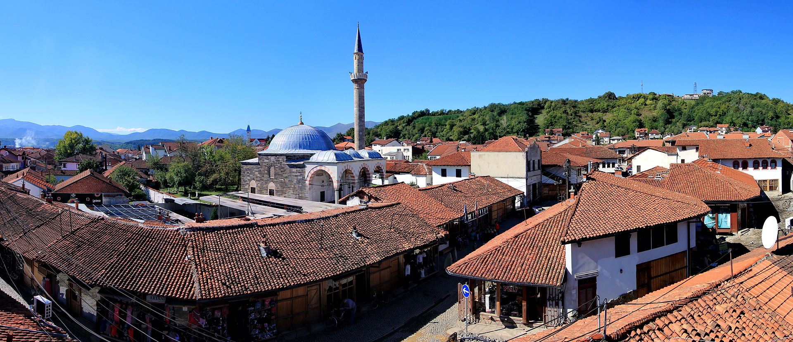

Gjakova is the seventh largest city of Kosovo and seat of Gjakova Municipality and Gjakova District. The city has 40,827 inhabitants, while the municipality has 94,556 inhabitants. Geographically, it is located in the south-western part of Kosovo, about halfway between the cities of Peja and Prizren. It is approximately 100 km (62 mi) inland from the Adriatic Sea. The city is situated some 208 kilometres (129 mi) north-east of Tirana, 145 kilometres (90 mi) north-west of Skopje, 80 kilometres (50 mi) west of the capital Pristina, 435 kilometres (270 mi) south of Belgrade and 263 kilometres (163 mi) east of Podgorica. The city of Gjakova has been populated since the prehistoric era. During the Ottoman period, Gjakova served as a trading centre on the route between Shkodra and Constantinople. It was also one of the most developed trade centres at that time in the Balkans.
Gjakova is located in the south-western part of Kosovo. To the north-east of the city, the west Kosovan plain of Metohija opens, while in the south-west the peak of Albanian Alps rises. The city is also situated at the entrance to the Erenik Valley, where the river Krena flows from the north to the Erenik mountain stream. After a few kilometers, it flows into the White Drin, the longest river in Kosovo.
Gjakova built an economy based on farming and agriculture, lower trade and some types of manufacturing workshops which mainly produce for the needs of city-based products as imported cases. After World War II, Gjakova has built an economy based on industry and agriculture but also in the service sector. Nowadays, these subsequent shifts in transitional societies are escorted with shifts in the economic structure of the city. Therefore, Gjakova has an economic structure that is based on two pillars: in the private business sector and social business sector which is currently being privatized. Private business sector is in expansion and the main indicators qualify it as the main component of Gjakova's economy.
According to the 2011 census, the resident population was 94,556, of which urban inhabitants numbered 40,827 and rural 53,729; there were 47,226 males and 47,330 females. The ethnic groups include Albanians (87,672), Balkan Egyptians (5,117), Roma (738), Ashkali (613), and smaller numbers of Bosniaks (73), Serbs (17), Turks (16), Gorani (13) and others. Based on those that answered, the religious make-up was 77,299 Muslims, 16,296 Roman Catholics, 22 Orthodox Christians 142 others, and 129 irreligious. Based on the population estimates from the Kosovo Agency of Statistics in 2016, the municipality has 95,433 inhabitants. According to OSCE estimations, before the Kosovo War of 1999 the municipality had a population of about 145,000, of which 93% were Kosovo Albanians and 7% non-majority communities, including some 3,000 Serbs, who mostly lived in Gjakova itself. Gjakova is characterized with two main Catholic Churches and Mosques, which are part of the cultural heritage of the city.

Historical monuments in Gjakova are divided into three main categories based on their cultural, religious and social context. The core part of the city was created between the Krena River to the east and Cabrati hill to the west. Around the cornerstone of the town, the Old Bazaar – the center of trade and craftsmanship – was created. By 1900, the bazaar housed around 1000 enterprises. Numerous bridges were built to enable the journey of trade caravans across the neighboring rivers. With the fast development of trade in the city, several inns were built to host the many visitors. Because of its ancient origins and fast economic development, Gjakova has become of great historical importance.